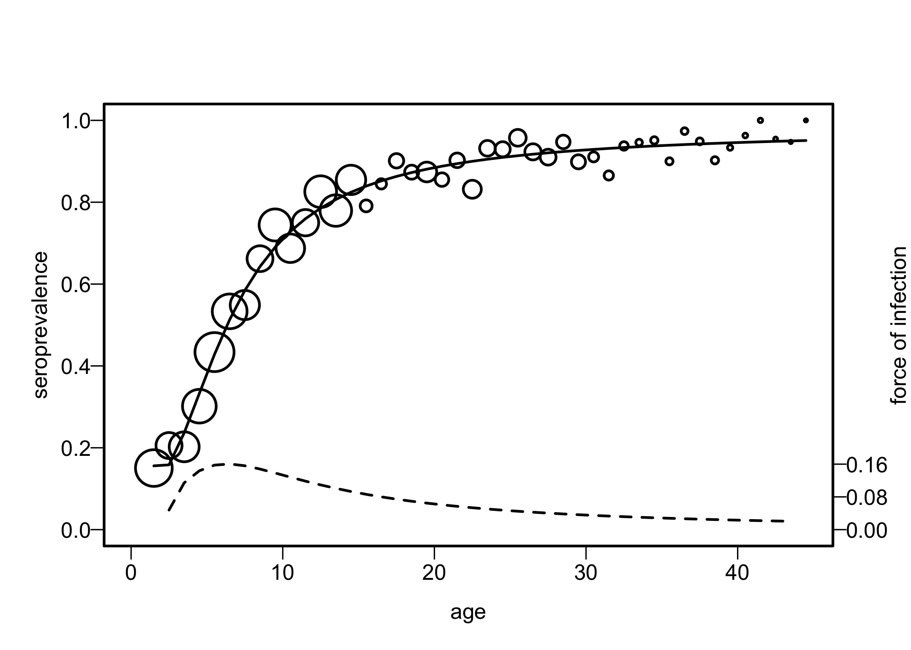

serosv is an easy-to-use and efficient tool to estimate infectious diseases parameters (seroprevalence and force of infection) using serological data. The current version is based on the book “Modeling Infectious Disease Parameters Based on Serological and Social Contact Data – A Modern Statistical Perspective” by Hens et al., 2012 Springer.
Installation
You can install the development version of serosv with:
# install.packages("devtools")
devtools::install_github("OUCRU-Modelling/serosv")Feature overview
Datasets
serosv contains 15 built-in serological datasets as provided by Hens et al., 2012 Springer. Simply call the name to load a dataset, for example:
rubella <- rubella_uk_1986_1987Methods
The following methods are available to estimate seroprevalence and force of infection.
Parametric approaches:
- Polynomial models:
- Muench’s model
- Griffiths’ model
- Grenfell and Anderson’s model
- Nonlinear models:
- Farrington’s model
- Weibull model
- Fractional polynomial models
Nonparametric approaches:
- Local estimation by polynomials
Demo
Load the rubella in UK dataset.
library(serosv)
#> Warning: replacing previous import 'VGAM::deviance' by 'stats::deviance' when
#> loading 'serosv'
#>
#> Attaching package: 'serosv'
#> The following object is masked from 'package:base':
#>
#> transform
rubella <- rubella_uk_1986_1987Find the power for the best second degree fractional polynomial with monotonicity constraint and a logit link function. The power appears to be (-0.9,-0.9).
best_2d_mn <- find_best_fp_powers(
rubella$age, rubella$pos, rubella$tot,
p=seq(-2,3,0.1), mc = T, degree=2, link="logit"
)
best_2d_mn
#> $p
#> [1] -0.9 -0.9
#>
#> $deviance
#> [1] 37.57966
#>
#> $model
#>
#> Call: glm(formula = as.formula(formulate(p_cur)), family = binomial(link = link))
#>
#> Coefficients:
#> (Intercept) I(age^-0.9)
#> 4.342 -4.696
#> I(I(age^-0.9) * log(age))
#> -9.845
#>
#> Degrees of Freedom: 43 Total (i.e. Null); 41 Residual
#> Null Deviance: 1369
#> Residual Deviance: 37.58 AIC: 210.1Finally, fit the second degree fractional polynomial.
